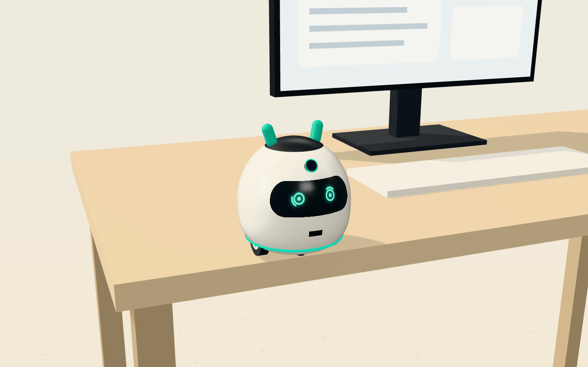
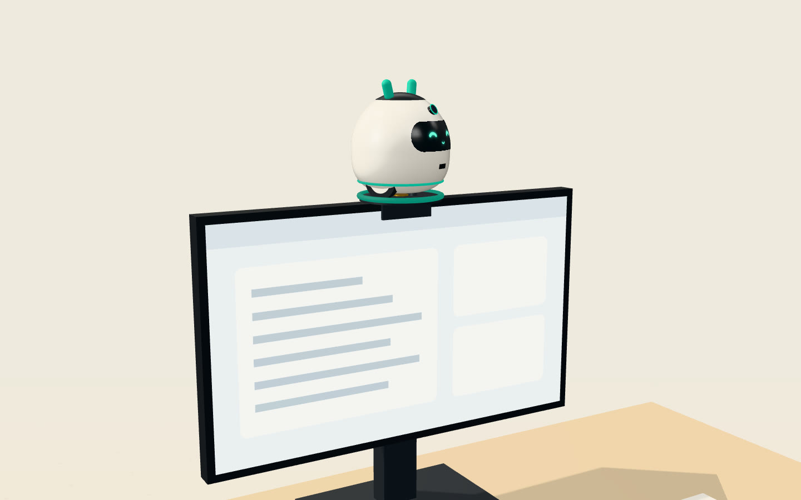

Nomi 高 12.8 cm，会看家、连 APP、放歌、主动问候、做表情，还能替你开灯关空调。同一套内部结构做了三款外观。这里是完整的设计方案：可以拆开看的 3D 模型、演示视频、制造流程和成本选材。
打开 3D 交互模型看制造流程与成本轮子藏在机身里，放下就能走；不想让它跑，就放桌上或吸到夹座上。

两个隐藏式驱动轮差速行走，最高 0.35 m/s。会巡逻、跟随、电量低了自己回充电座。

降速到 0.1 m/s 在桌上活动，底部悬崖传感器探到桌沿立刻刹停。提醒久坐、喝水，随口控制家电。

夹座夹住屏幕上沿，中心磁铁把机器人吸在托盘里，USB-C 供电。它能原地转头，摄像头当电脑摄像头用。
88 秒，直接从 3D 模型逐帧录制：问候、巡逻、安防、控制家电、听歌、桌面模式、夹屏幕模式、拆解、三款外观。
| 功能 | 怎么实现 |
|---|---|
| 摄像监控 | 前额 1080p 广角摄像头（120°）+ 红外夜视，APP 看实时画面，有人移动时推送 |
| 连接 APP | Wi-Fi 6 + 蓝牙 5.2，远程遥控、看画面、管理家电 |
| 听歌 | 背部 36 mm 全频喇叭 5 W，蓝牙 / Wi-Fi 串流 |
| 走动 | 隐藏式双轮差速底盘，ToF 避障，3 个悬崖传感器防跌落 |
| 问候与情绪价值 | 4 麦阵列听声辨位，人脸识别认出主人，云端大模型对话，主动问候和提醒 |
| 表情动作 | 2.4 寸屏 + 弧面镜片显示表情，两只耳朵由舵机带动，RGB 灯环，摸头有反应 |
| 控制家电 | 头顶 360° 红外遥控老家电，Matter 协议接智能灯、插座、窗帘 |